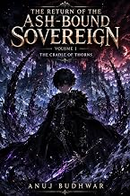

Home / Books / The Return of the Ash-Bound Sovereign
3 volumes
The Return of the Ash-Bound Sovereign

He died as House Valdris's most expendable blade. He returned as its youngest nightmare. Lucian Van Valdris spent forty years serving as the hidden fang of House Valdris—slaughtering rivals, destroying fortresses, and burying secrets for the bloodline that never considered him family. When his usefulness ends, they repay his loyalty with an execution in the Frost-Cauldron. But death is not the end. Lucian awakens four decades in the past, reborn as a helpless infant within the very house that betrayed him. This time, he remembers everything. Armed with the ruthless experience of his former life and a cultivation path forged through pain, Lucian refuses to become another disposable hound. He will temper his body in primordial frost, tear through the clan's carefully protected hierarchy, uncover the secrets buried beneath its foundations, and seize the power that was denied to him. In a world where bloodline determines worth and weakness invites murder, mercy is a luxury. Lucian has already died once. This time, he intends to become the sovereign.
All volumes
The Return of the Ash-Bound Sovereign: The Cradle of Thorns